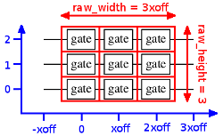

| Safe Haskell | None |
|---|
Quipper.Internal.Printing
Contents
Description
Pretty-printing of low-level quantum circuits.
Synopsis
- self_inverse :: String -> [Wire] -> [Wire] -> Bool
- type WireTypeMap = IntMap Wiretype
- track_wiretype :: WireTypeMap -> Gate -> WireTypeMap
- ascii_of_boxid :: BoxId -> String
- ascii_render_control :: WireTypeMap -> Signed Wire -> String
- ascii_render_controls :: WireTypeMap -> Controls -> String
- ascii_render_nocontrolflag :: NoControlFlag -> String
- ascii_render_gate :: WireTypeMap -> Gate -> String
- ascii_render_gatelist :: WireTypeMap -> [Gate] -> String
- ascii_render_wiretype :: Wiretype -> String
- ascii_render_typeas :: (Wire, Wiretype) -> String
- ascii_render_arity :: String -> Arity -> String
- ascii_render_oarity :: String -> [Wire] -> Arity -> String
- ascii_of_ocircuit :: OCircuit -> String
- ascii_of_circuit :: Circuit -> String
- ascii_of_bcircuit :: BCircuit -> String
- ascii_of_subroutine :: (BoxId, TypedSubroutine) -> String
- prompt :: String -> IO ()
- getBit :: IO Bool
- run_readwrite_ascii :: WireTypeMap -> ReadWrite a -> Namespace -> IO (a, Namespace)
- print_dbcircuit_ascii :: ErrMsg -> DBCircuit a -> IO ()
- white :: Color
- black :: Color
- data FormatStyle = FormatStyle {
- renderformat :: RenderFormat
- backgroundcolor :: Color
- foregroundcolor :: Color
- linewidth :: Double
- coffs :: Double
- dotradius :: Double
- oplusradius :: Double
- xoff :: Double
- gatepad :: Double
- gateheight :: Double
- crossradius :: Double
- stringbase :: Double
- barwidth :: Double
- barheight :: Double
- dwidth :: Double
- dheight :: Double
- maxgatelabelwidth :: Double
- maxlabelwidth :: Double
- maxnumberwidth :: Double
- gatefont :: Font
- commentfont :: Font
- commentcolor :: Color
- labelfont :: Font
- labelcolor :: Color
- numberfont :: Font
- numbercolor :: Color
- subroutineshape :: Bool
- defaultStyle :: RenderFormat -> FormatStyle
- pdf :: FormatStyle
- eps :: FormatStyle
- ps :: FormatStyle
- ps_escape :: String -> String
- string_of_boxid :: BoxId -> String
- assign_x_coordinates :: FormatStyle -> [Gate] -> X -> (X, [(Gate, X)])
- type Xarity = Map Wire (Wiretype, X)
- update_xarity :: Xarity -> Gate -> X -> (Xarity, Xarity)
- render_line :: X -> Y -> X -> Y -> Draw ()
- render_dot :: FormatStyle -> X -> Y -> Draw ()
- render_circle :: FormatStyle -> X -> Y -> Draw ()
- render_not :: FormatStyle -> X -> Y -> Draw ()
- render_swap :: FormatStyle -> X -> Y -> Draw ()
- render_bar :: FormatStyle -> X -> Y -> Draw ()
- render_dbar :: FormatStyle -> X -> Y -> Draw ()
- render_init :: FormatStyle -> String -> X -> Y -> Draw ()
- render_term :: FormatStyle -> String -> X -> Y -> Draw ()
- render_dterm :: FormatStyle -> String -> X -> Y -> Draw ()
- render_namedgate :: FormatStyle -> String -> InverseFlag -> X -> Y -> Draw ()
- render_gphasegate :: FormatStyle -> String -> X -> Y -> Draw ()
- render_circgate :: FormatStyle -> String -> X -> Y -> Draw ()
- render_blankgate :: FormatStyle -> String -> X -> Y -> Draw ()
- render_comment :: FormatStyle -> Bool -> String -> X -> Y -> Y -> Draw ()
- render_label :: FormatStyle -> Bool -> String -> X -> Y -> Draw ()
- render_number :: FormatStyle -> Int -> Bool -> X -> Y -> Draw ()
- render_typeas :: FormatStyle -> Map Wire Y -> X -> X -> Wire -> Wiretype -> Draw ()
- render_xarity :: FormatStyle -> Map Wire Y -> Xarity -> X -> Draw ()
- dshow :: Double -> String
- render_controlwire :: X -> Map Wire Y -> [Wire] -> Controls -> Draw ()
- render_controlwire_float :: X -> Map Wire Y -> Y -> Controls -> Draw ()
- render_controldots :: FormatStyle -> X -> Map Wire Y -> Controls -> Draw ()
- render_multi_gate :: FormatStyle -> X -> Map Wire Y -> String -> InverseFlag -> [Wire] -> Draw ()
- render_multi_named_ctrl :: FormatStyle -> X -> Map Wire Y -> [Wire] -> [String] -> Draw ()
- render_multi_genctrl :: FormatStyle -> X -> Map Wire Y -> [Wire] -> Draw ()
- render_ordering :: FormatStyle -> X -> Map Wire Y -> Bool -> [Wire] -> Draw ()
- render_gate :: FormatStyle -> Gate -> X -> Map Wire Y -> Y -> (Draw (), Draw ())
- render_gates :: FormatStyle -> Xarity -> [(Gate, X)] -> Map Wire Y -> X -> Y -> (Draw (), Draw ())
- ps_parameters :: FormatStyle -> String
- ps_subroutines :: String
- page_of_ocircuit :: FormatStyle -> Maybe BoxId -> OCircuit -> Document ()
- render_bcircuit :: FormatStyle -> BCircuit -> Document ()
- render_dbcircuit :: FormatStyle -> ErrMsg -> DBCircuit a -> Document ()
- print_bcircuit_format :: FormatStyle -> BCircuit -> IO ()
- print_dbcircuit_format :: FormatStyle -> ErrMsg -> DBCircuit a -> IO ()
- preview_document :: Document a -> IO a
- preview_document_custom :: Custom -> Document a -> IO a
- preview_bcircuit :: BCircuit -> IO ()
- preview_dbcircuit :: ErrMsg -> DBCircuit a -> IO ()
- type ControlType = (Int, Int)
- controltype :: Controls -> ControlType
- nocontrols :: ControlType
- data Gatetype
- data AnnGatetype
- unannotate_gatetype :: AnnGatetype -> Gatetype
- add_controls_gatetype :: ErrMsg -> ControlType -> AnnGatetype -> AnnGatetype
- reverse_gatetype :: ErrMsg -> AnnGatetype -> AnnGatetype
- set_ncf_gatetype :: AnnGatetype -> AnnGatetype
- with_arity :: String -> Int -> String
- gatetype :: Gate -> AnnGatetype
- string_of_gatetype :: Gatetype -> String
- type Gatecount = Map Gatetype Integer
- type AnnGatecount = Map AnnGatetype Integer
- reverse_gatecount :: ErrMsg -> AnnGatecount -> AnnGatecount
- add_controls_gatecount :: ErrMsg -> ControlType -> AnnGatecount -> AnnGatecount
- set_ncf_gatecount :: AnnGatecount -> AnnGatecount
- unannotate_gatecount :: AnnGatecount -> Gatecount
- count :: (Ord a, Num int) => [(int, a)] -> Map a int
- anngatecount_of_circuit :: Circuit -> AnnGatecount
- gatecount_of_circuit :: Circuit -> Gatecount
- gatecount_of_subroutine_call :: ErrMsg -> AnnGatetype -> RepeatFlag -> AnnGatecount -> AnnGatecount
- anngatecount_of_circuit_with_sub_cts :: ErrMsg -> Map BoxId AnnGatecount -> Circuit -> AnnGatecount
- aggregate_gatecounts_of_bcircuit :: BCircuit -> Gatecount
- gate_wires_change :: Gate -> Integer
- aggregate_maxwires_of_bcircuit :: BCircuit -> Integer
- maxwires_of_circuit_with_sub_maxwires :: ErrMsg -> Map BoxId Integer -> Circuit -> Integer
- print_gatecount :: Gatecount -> IO ()
- print_gatecounts_circuit :: Circuit -> IO ()
- print_gatecounts_bcircuit :: BCircuit -> IO ()
- print_gatecounts_subroutine :: (BoxId, TypedSubroutine) -> IO ()
- print_gatecounts_dbcircuit :: ErrMsg -> DBCircuit a -> IO ()
- data Format
- = EPS
- | PS
- | ASCII
- | Preview
- | GateCount
- | CustomStyle FormatStyle
- format_enum :: [(String, Format)]
- print_dbcircuit :: Format -> ErrMsg -> DBCircuit a -> IO ()
- print_of_document :: Format -> Document a -> IO a
- print_of_document_custom :: Custom -> Format -> Document a -> IO a
- print_errmsg :: QCData qa => ErrMsg -> Format -> (qa -> Circ b) -> qa -> IO ()
- print_unary :: QCData qa => Format -> (qa -> Circ b) -> qa -> IO ()
- print_generic :: (QCData qa, QCurry qfun qa b, Curry fun qa (IO ())) => Format -> qfun -> fun
- print_simple :: (QCData qa, QCurry qfun qa b, Curry fun qa (IO ()), QCData_Simple qa) => Format -> qfun -> IO ()
Auxiliary functions
ASCII representation of circuits
Convert a circuit to ASCII: one gate per line.
type WireTypeMap = IntMap Wiretype Source #
track_wiretype :: WireTypeMap -> Gate -> WireTypeMap Source #
Given a map of wiretypes, and a gate, update the wiretype in the map if the gate changes it.
ascii_of_boxid :: BoxId -> String Source #
Convert a BoxId to the string in the format "name", shape "x".
ascii_render_control :: WireTypeMap -> Signed Wire -> String Source #
Generate an ASCII representation of a control. As controls are stored as untyped wires, we can lookup the wiretype in the current map and annotate the control if it's classical.
ascii_render_controls :: WireTypeMap -> Controls -> String Source #
Generate an ASCII representation of a list of controls.
ascii_render_nocontrolflag :: NoControlFlag -> String Source #
Generate an ASCII representation of a NoControlFlag
ascii_render_gate :: WireTypeMap -> Gate -> String Source #
Generate an ASCII representation of a single gate.
ascii_render_gatelist :: WireTypeMap -> [Gate] -> String Source #
Generate an ASCII representation of a gate list.
ascii_render_wiretype :: Wiretype -> String Source #
Generate an ASCII representation of a wiretype.
ascii_render_typeas :: (Wire, Wiretype) -> String Source #
Generate an ASCII representation of a type assignment.
ascii_render_arity :: String -> Arity -> String Source #
Generate an ASCII representation of an arity, preceded by a title (input or output).
ascii_render_oarity :: String -> [Wire] -> Arity -> String Source #
Generate an ASCII representation of an ordered arity, preceded by a title (input or output).
ascii_of_ocircuit :: OCircuit -> String Source #
Generate an ASCII representation of a low-level ordered quantum circuit.
ascii_of_circuit :: Circuit -> String Source #
Generate an ASCII representation of a low-level quantum circuit.
ascii_of_bcircuit :: BCircuit -> String Source #
Generate an ASCII representation of a low-level boxed quantum circuit.
ascii_of_subroutine :: (BoxId, TypedSubroutine) -> String Source #
Generate an ASCII representation of a named subroutine.
Dynamic ASCII representation of circuits
The dynamic ASCII representation prints a circuit to standard
output in ASCII format, just like the static ASCII representation.
However, when a dynamic_lift operation is encountered, it prompts
the user for the value of the corresponding bit. In effect, the
user is asked to act as the quantum device or simulator.
prompt :: String -> IO () Source #
Write a prompt to get input from the user. Since the prompt doesn't include a newline, the output must be flushed explicitly.
Interactively read a bit (either 0 or 1) from standard input. This is intended for interactive user input, so it skips white space until a 0 or 1 is encountered. In case the first non-whitespace character isn't 0 or 1 or '#', the rest of the line is ignored and the user is prompted to try again.
However, this also works for non-interactive input, so that the
input can be redirected from a file. In this case, the characters 0
and 1 and whitespace, including newlines, can be interspersed
freely. '#' starts a comment that extends until the end of the
line.
run_readwrite_ascii :: WireTypeMap -> ReadWrite a -> Namespace -> IO (a, Namespace) Source #
print_dbcircuit_ascii :: ErrMsg -> DBCircuit a -> IO () Source #
Interactively output a DBCircuit to standard output. This
supports dynamic lifting by prompting the user for bit values when
a dynamic lifting operation is encountered. Effectively the user is
asked to behave like a quantum device.
Graphical representation of circuits
data FormatStyle Source #
A data type that holds all the customizable parameters.
Constructors
| FormatStyle | |
Fields
| |
Instances
| Show FormatStyle # | |
Defined in Quipper.Internal.Printing Methods showsPrec :: Int -> FormatStyle -> ShowS # show :: FormatStyle -> String # showList :: [FormatStyle] -> ShowS # | |
defaultStyle :: RenderFormat -> FormatStyle Source #
A RenderFormat consisting of some default parameters, along with the given RenderFormat.
pdf :: FormatStyle Source #
The default PDF Style.
eps :: FormatStyle Source #
The default EPS Style.
ps :: FormatStyle Source #
The default PS Style.
General-purpose PostScript functions
String formatting
string_of_boxid :: BoxId -> String Source #
Convert a BoxId to the string in the format "name, shape x".
Functions for dealing with x-coordinates
assign_x_coordinates :: FormatStyle -> [Gate] -> X -> (X, [(Gate, X)]) Source #
Pre-processing: figure out the x-column of each gate. Returns
(n,xgs) where xgs is a list of (Gate, X) pairs, and
n is the rightmost x-coordinate of the circuit. Here we start
from x0 and use constant step xoff taken from the FormatStyle.
type Xarity = Map Wire (Wiretype, X) Source #
A Xarity is a map from wire id's to pairs of a wiretype and a
starting x-coordinate.
Low-level drawing functions
render_line :: X -> Y -> X -> Y -> Draw () Source #
render_line x0 y0 x1 y1
render_dot :: FormatStyle -> X -> Y -> Draw () Source #
render_dot x y
render_circle :: FormatStyle -> X -> Y -> Draw () Source #
render_circle x y
render_not :: FormatStyle -> X -> Y -> Draw () Source #
render_not x y
render_swap :: FormatStyle -> X -> Y -> Draw () Source #
render_swap x y
render_bar :: FormatStyle -> X -> Y -> Draw () Source #
render_bar x y
render_dbar :: FormatStyle -> X -> Y -> Draw () Source #
render_bar x y
render_init :: FormatStyle -> String -> X -> Y -> Draw () Source #
render_init name x y
render_term :: FormatStyle -> String -> X -> Y -> Draw () Source #
render_term name x y
render_dterm :: FormatStyle -> String -> X -> Y -> Draw () Source #
render_dterm name x y
render_namedgate :: FormatStyle -> String -> InverseFlag -> X -> Y -> Draw () Source #
render_namedgate name inv x yTrue, append an "inverse" symbol to the
end of the name.
render_gphasegate :: FormatStyle -> String -> X -> Y -> Draw () Source #
render_gphasegate name x y
render_circgate :: FormatStyle -> String -> X -> Y -> Draw () Source #
render_circgate name x y
render_blankgate :: FormatStyle -> String -> X -> Y -> Draw () Source #
render_blankgate name x y
render_comment :: FormatStyle -> Bool -> String -> X -> Y -> Y -> Draw () Source #
render_comment center s x y mTrue, center it at the
x-coordinate, else move it just to the left of the
x-coordinate. m is the maximum height allowed for the comment.
render_label :: FormatStyle -> Bool -> String -> X -> Y -> Draw () Source #
render_label center s x yTrue, center it at the
x-coordinate, else move it just to the right of the
x-coordinate.
render_number :: FormatStyle -> Int -> Bool -> X -> Y -> Draw () Source #
Render the number at the given point (x,y). If the boolean
argument is True, put the number to the right of x, else to the left.
Higher-level rendering functions
render_typeas :: FormatStyle -> Map Wire Y -> X -> X -> Wire -> Wiretype -> Draw () Source #
Render a horizontal wire from x-coordinates oldx to x, using t as the type and figuring out the y-coordinate from ys and w. Append to the given string. If the parameters are invalid (w not in ys), throw an error.
render_xarity :: FormatStyle -> Map Wire Y -> Xarity -> X -> Draw () Source #
Render a bunch of horizontal wires from their respective starting
Xarity to x.
dshow :: Double -> String Source #
Format a floating point number in concise form, with limited accuracy.
render_controlwire :: X -> Map Wire Y -> [Wire] -> Controls -> Draw () Source #
render_controlwire x ys ws c
Parameters: x is the current x-coordinate, ys is an indexed array of y-coordinates, ws is the set of wires for boxes, and c is a list of controls.
render_controlwire_float :: X -> Map Wire Y -> Y -> Controls -> Draw () Source #
render_controlwire_float x ys y c
Parameters: x is the current x-coordinate, ys is an indexed array of y-coordinates, y is the y-coordinate of the wire where the floating gate is attached, and c is a list of controls.
render_controldots :: FormatStyle -> X -> Map Wire Y -> Controls -> Draw () Source #
render_controldots x ys c
render_multi_gate :: FormatStyle -> X -> Map Wire Y -> String -> InverseFlag -> [Wire] -> Draw () Source #
render_multi_gate x ys name inv wires
render_multi_named_ctrl :: FormatStyle -> X -> Map Wire Y -> [Wire] -> [String] -> Draw () Source #
render_multi_named_ctrl x ys wires names
render_multi_genctrl :: FormatStyle -> X -> Map Wire Y -> [Wire] -> Draw () Source #
render_multi_genctrl x ys wires
render_ordering :: FormatStyle -> X -> Map Wire Y -> Bool -> [Wire] -> Draw () Source #
Number a list of wires in increasing order, at the given
x-coordinate. If the boolean argument is True, put the numbers
to the right of x, else to the left.
render_gate :: FormatStyle -> Gate -> X -> Map Wire Y -> Y -> (Draw (), Draw ()) Source #
Render gate g at x-coordinate x and y-coordinates as given by ys, which is a map from wires to y-coordinates. Returns a pair (s,t) of draw actions for background and foreground, respectively.
render_gates :: FormatStyle -> Xarity -> [(Gate, X)] -> Map Wire Y -> X -> Y -> (Draw (), Draw ()) Source #
Render the gates in the circuit. The parameters are: xarity:
the Xarity of the currently pending wires. xgs: the list of
gates, paired with pre-computed x-coordinates. ys: a map from
wires to pre-computed y-coordinates. x: the right-most
x-coordinate where the final wires will be drawn to. maxh: the
maximal height of comments.
ps_parameters :: FormatStyle -> String Source #
PostScript definitions of various parameters.
ps_subroutines :: String Source #
PostScript definitions for various drawing subroutines. The subroutines provided are:
x0 y0 x1 y1 line : draw a line from (x0,y0) to (x1,y1)
x0 y0 x1 y1 dashedline : draw a dashed line from (x0,y0) to (x1,y1)
x y h w rect : draw a rectangle of dimensions w x h centered at (x,y)
x y h w oval : draw an oval of dimensions w x h centered at (x,y)
x y dot : draw a filled dot at (x,y)
x y circ : draw an empty dot at (x,y)
x y oplus : draw a "not" gate at (x,y)
x y cross : draw a cross ("swap" gate component) at (x,y)
x y bar : draw an init/term bar at (x,y)
x y dbar : draw a dterm bar at (x,y)
name x y box : draw an empty box at (x,y), big enough to fit name
name x y gate : draw a named box at (x,y)
name x y circgate : draw a named round box at (x,y)
name x y gphase : draw a global phase gate (x,y)
b x y init : draw an "init" gate at (x,y), with state b
b x y term : draw a "term" gate at (x,y), with state b
b x y dterm : draw a "dterm" gate at (x,y), with state b
string x y m b comment : draw a vertical comment at (x,y), with max height m and baseline adjustment b
string x y clabel : draw a wire label at (x,y), x-centered
string x y rlabel : draw a wire label at (x,y), right of x
string x y lnumber : draw a numbered input at (x,y)
string x y rnumber : draw a numbered output at (x,y)page_of_ocircuit :: FormatStyle -> Maybe BoxId -> OCircuit -> Document () Source #
page_of_ocircuit name ocirc
The rendering takes place in the following user coordinate system:

render_bcircuit :: FormatStyle -> BCircuit -> Document () Source #
Render a low-level boxed quantum circuit as a graphical
Document. If there are subroutines, each of them is placed on a
separate page.
render_dbcircuit :: FormatStyle -> ErrMsg -> DBCircuit a -> Document () Source #
Render a low-level dynamic quantum circuit as a graphical
Document. If there are subroutines, each of them is placed on a
separate page. If the circuit uses dynamic lifting, an error is
produced.
print_bcircuit_format :: FormatStyle -> BCircuit -> IO () Source #
Print a representation of a low-level quantum circuit, in the requested graphics format, directly to standard output. If there are boxed subcircuits, each of them is placed on a separate page.
print_dbcircuit_format :: FormatStyle -> ErrMsg -> DBCircuit a -> IO () Source #
Print a representation of a low-level dynamic quantum circuit, in the requested graphics format, directly to standard output. If there are boxed subcircuits, each of them is placed on a separate page. If the circuit uses dynamic lifting, an error is produced.
Previewing
preview_document :: Document a -> IO a Source #
Display a document directly in Acrobat Reader. This may not be portable. It requires the external program "acroread" to be installed.
preview_document_custom :: Custom -> Document a -> IO a Source #
Display a document directly in Acrobat Reader. This may not be portable. It requires the external program "acroread" to be installed.
preview_bcircuit :: BCircuit -> IO () Source #
Display the circuit directly in Acrobat Reader. This may not be portable. It requires the external program "acroread" to be installed.
preview_dbcircuit :: ErrMsg -> DBCircuit a -> IO () Source #
Display a low-level dynamic quantum circuit directly in Acrobat Reader. This may not be portable. It requires the external program "acroread" to be installed. If the circuit uses dynamic lifting, an error is produced.
Gate counts
Gate types
The type Gate contains too much information to be used as the
index for counting gates: all CNot gates, for instance,
should be counted together, regardless of what wires they are
applied to.
We define Gatetype to remedy this, with each value of
Gatetype corresponding to an equivalence class of
gates as they should appear in gate counts.
During gate counting, a little more information needs to be retained,
so that operations such as adding controls to subroutine counts can
be accurately performed. AnnGatetype supplies this information.
type ControlType = (Int, Int) Source #
An abbreviated representation of the controls of a gate: the number of positive and negative controls, respectively.
controltype :: Controls -> ControlType Source #
From a list of controls, extract the number of positive and negative controls.
nocontrols :: ControlType Source #
Convenience constant for uncontrolled gates.
A data type representing equivalence classes of basic gates, for the output of gatecounts.
Constructors
| Gatetype String ControlType | |
| GatetypeSubroutine BoxId InverseFlag ControlType |
data AnnGatetype Source #
A data type analogous to Gatetype, but with extra annotations,
e.g. a NoControlFlag, for use in the computation of gate counts.
Constructors
| AnnGatetype String (Maybe String) ControlType NoControlFlag ControllableFlag | |
| AnnGatetypeSubroutine BoxId InverseFlag ControlType NoControlFlag ControllableFlag |
Instances
| Eq AnnGatetype # | |
Defined in Quipper.Internal.Printing | |
| Ord AnnGatetype # | |
Defined in Quipper.Internal.Printing Methods compare :: AnnGatetype -> AnnGatetype -> Ordering # (<) :: AnnGatetype -> AnnGatetype -> Bool # (<=) :: AnnGatetype -> AnnGatetype -> Bool # (>) :: AnnGatetype -> AnnGatetype -> Bool # (>=) :: AnnGatetype -> AnnGatetype -> Bool # max :: AnnGatetype -> AnnGatetype -> AnnGatetype # min :: AnnGatetype -> AnnGatetype -> AnnGatetype # | |
| Show AnnGatetype # | |
Defined in Quipper.Internal.Printing Methods showsPrec :: Int -> AnnGatetype -> ShowS # show :: AnnGatetype -> String # showList :: [AnnGatetype] -> ShowS # | |
unannotate_gatetype :: AnnGatetype -> Gatetype Source #
Forget the annotations of an AnnGatetype
add_controls_gatetype :: ErrMsg -> ControlType -> AnnGatetype -> AnnGatetype Source #
Add controls to an annotated gate type, or throw an error message if it is not controllable;
unless its NoControlFlag is set, in which case leave it unchanged.
reverse_gatetype :: ErrMsg -> AnnGatetype -> AnnGatetype Source #
Reverse an annotated gate type, of throw an error if it is not reversible.
set_ncf_gatetype :: AnnGatetype -> AnnGatetype Source #
Set the NoControlFlag of an annotated gate type to True.
with_arity :: String -> Int -> String Source #
Helper function for gatetype: append a formatted arity to a string.
gatetype :: Gate -> AnnGatetype Source #
Convert a given low-level gate to an annotated gate type
string_of_gatetype :: Gatetype -> String Source #
Convert a gate type to a human-readable string.
Gate counts
type AnnGatecount = Map AnnGatetype Integer Source #
Annotated gate counts of circuits.
reverse_gatecount :: ErrMsg -> AnnGatecount -> AnnGatecount Source #
Given the (annotated) gatecount of a circuit, return the gatecount of the reverse circuit, or throw an error if any component is not reversible.
add_controls_gatecount :: ErrMsg -> ControlType -> AnnGatecount -> AnnGatecount Source #
Given the (annotated) gatecount of a circuit, return the gatecount of the same circuit with controls added, or throw an error if any component is not controllable.
set_ncf_gatecount :: AnnGatecount -> AnnGatecount Source #
Set the ncf of all gates in a gatecount to True.
unannotate_gatecount :: AnnGatecount -> Gatecount Source #
Remove the annotations from a gatecount.
count :: (Ord a, Num int) => [(int, a)] -> Map a int Source #
Input a list of items and output a map from items to counts. Example:
count ['a', 'b', 'a'] = Map.fromList [('a',2), ('b',1)]anngatecount_of_circuit :: Circuit -> AnnGatecount Source #
Count the number of gates of each type in a circuit, with annotations, treating subroutine calls as atomic gates.
gatecount_of_circuit :: Circuit -> Gatecount Source #
Count the number of gates of each type in a circuit, treating subroutine calls as atomic gates.
gatecount_of_subroutine_call :: ErrMsg -> AnnGatetype -> RepeatFlag -> AnnGatecount -> AnnGatecount Source #
Given an AnnGatetype describing a subroutine call
(possibly repeated),
and a gate count for the subroutine itself, return the gatecount
of the subroutine call.
(This may be the reverse of the original subroutine, may have controls added, etc.)
anngatecount_of_circuit_with_sub_cts :: ErrMsg -> Map BoxId AnnGatecount -> Circuit -> AnnGatecount Source #
Given a circuit and gatecounts for its subroutines, give an (aggregated) gatecount for the circuit.
aggregate_gatecounts_of_bcircuit :: BCircuit -> Gatecount Source #
Give the aggregate gate count of a BCircuit; that is, the
the total count of basic gates once all subroutines are fully inlined.
Wire usage count
gate_wires_change :: Gate -> Integer Source #
Count by how much a low-level gate changes the number of wires in the arity.
aggregate_maxwires_of_bcircuit :: BCircuit -> Integer Source #
Find the maximum number of wires used simultaneously in a BCircuit,
assuming all subroutines inlined.
maxwires_of_circuit_with_sub_maxwires :: ErrMsg -> Map BoxId Integer -> Circuit -> Integer Source #
Given a circuit and gatecounts for its subroutines, give an (aggregated) gatecount for the circuit.
Printing gate counts
print_gatecount :: Gatecount -> IO () Source #
Print a gate count, as a table of integers and gate types.
print_gatecounts_circuit :: Circuit -> IO () Source #
Print the simple gate count, plus summary information, for a simple circuit.
print_gatecounts_bcircuit :: BCircuit -> IO () Source #
Print gate counts for a boxed circuit: first the simple gate count for each subroutine separately, then the aggregated count for the whole circuit.
print_gatecounts_subroutine :: (BoxId, TypedSubroutine) -> IO () Source #
Print gate counts for a named subroutine.
print_gatecounts_dbcircuit :: ErrMsg -> DBCircuit a -> IO () Source #
Print gate counts for a static DBCircuit. The circuit may not
use any dynamic lifting, or else an error will be produced.
Printing to multiple formats
Available output formats.
Constructors
| EPS | Encapsulated PostScript graphics. |
Portable Document Format. One circuit per page. | |
| PS | PostScript. One circuit per page. |
| ASCII | A textual representation of circuits. |
| Preview | Don't print anything, but preview directly on screen (requires the external program acroread). |
| GateCount | Print statistics on gate counts. |
| CustomStyle FormatStyle |
format_enum :: [(String, Format)] Source #
A mapping from lower-case strings (to be used, e.g., with command line options) to available formats.
print_dbcircuit :: Format -> ErrMsg -> DBCircuit a -> IO () Source #
Print a low-level quantum circuit directly to the IO monad, using the specified format.
print_of_document_custom :: Custom -> Format -> Document a -> IO a Source #
Like print_of_document, but also takes a Custom data
structure.
Generic printing
print_errmsg :: QCData qa => ErrMsg -> Format -> (qa -> Circ b) -> qa -> IO () Source #
Like print_unary, but also takes a stub error message.
print_unary :: QCData qa => Format -> (qa -> Circ b) -> qa -> IO () Source #
Print a circuit generating function to the specified format; this requires a shape parameter.
print_generic :: (QCData qa, QCurry qfun qa b, Curry fun qa (IO ())) => Format -> qfun -> fun Source #
Print a circuit generating function to the specified
format. Unlike print_unary, this can be applied to a
circuit-generating function in curried form with n arguments, for
any n >= 0. It then requires n shape parameters.
The type of this heavily overloaded function is difficult to read. In more readable form, it has all of the following types:
print_generic :: Format -> Circ qa -> IO () print_generic :: (QCData qa) => Format -> (qa -> Circ qb) -> a -> IO () print_generic :: (QCData qa, QCData qb) => Format -> (qa -> qb -> Circ qc) -> a -> b -> IO ()
and so forth.
print_simple :: (QCData qa, QCurry qfun qa b, Curry fun qa (IO ()), QCData_Simple qa) => Format -> qfun -> IO () Source #
Like print_generic, but only works at simple types, and
therefore requires no shape parameters.